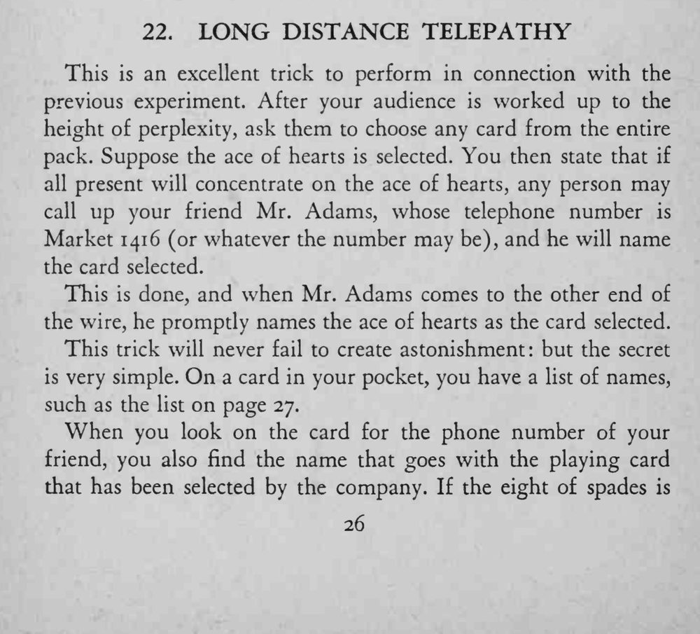
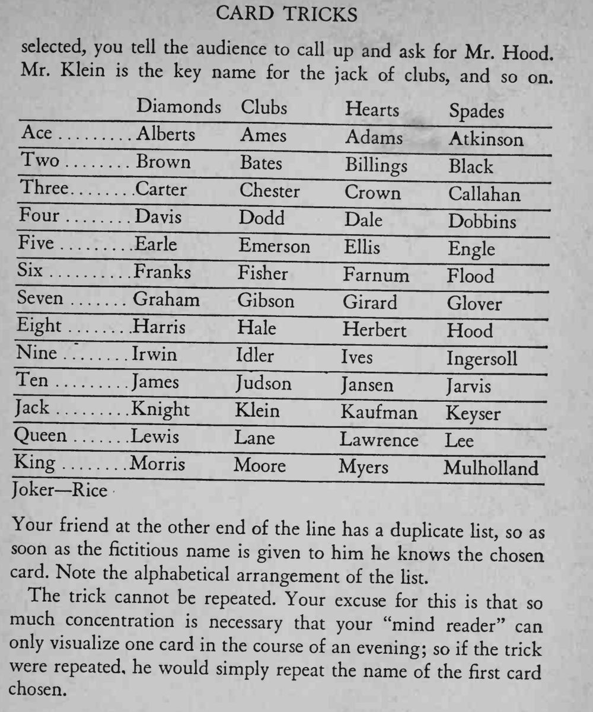

观众随便选一张牌，全场一起集中想它，再打电话给魔术师的朋友，对方在电话那头立刻报出选牌。
名单要按花色分组、组内按字母排序，才能一眼查出对应名字。


This is an excellent trick to perform in connection with the previous experiment. After your audience is worked up to the height of perplexity, ask them to choose any card from the entire pack. Suppose the ace of hearts is selected. You then state that if all present will concentrate on the ace of hearts, any person may call up your friend Mr. Adams, whose telephone number is Market 141 6 (or whatever the number may be), and he will name the card selected. This is done, and when Mr. Adams comes to the other end of the wire, he promptly names the ace of hearts as the card selected. This trick will never fail to create astonishment: but the secret is very simple. On a card in your pocket, you have a list of names, such as the list on page 27. When you look on the card for the phone number of your friend, you also find the name that goes with the playing card that has been selected by the company. If the eight of spades is selected, you tell the audience to call up and ask for Mr. Hood. Mr. Klein is the key name for the jack of clubs, and so on. Diamonds Clubs Hearts Spades Ace Alberts Ames Adams Atkinson Two Brown Bates Billings Black Three. Carter Chester Crown Callahan Four Davis Dodd Dale Dobbins Five Earle Emerson Ellis Engle Six Franks Fisher Farnum Flood Seven Graham Gib son Girard Glover £i ght Harris Hale Herbert Ho od Ninc Irwin Idler lyes Ingersoll Ten James Judson Jansen Jarvis J ack Knight Klein Kaufman Keyser Queen Lewis Lane Lawrenc e Lee King -Morris Moore Myers Mul holland Joker Rice Your friend at the other end of the line has a duplicate so as list, soon as the fictitious name is given to him he knows the chosen card. Note the alphabetical arrangement of the list. The trick cannot be repeated. Your excuse for this is that so much concentration is necessary that your "mind reader" can only visualize one card in the course of an evening; so if the trick were repeated, he would simply repeat the name of the first card chosen.